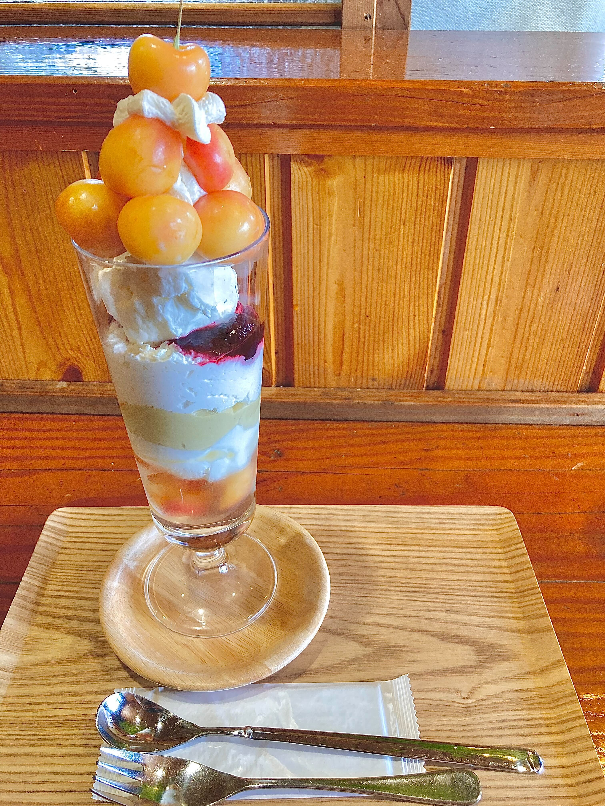
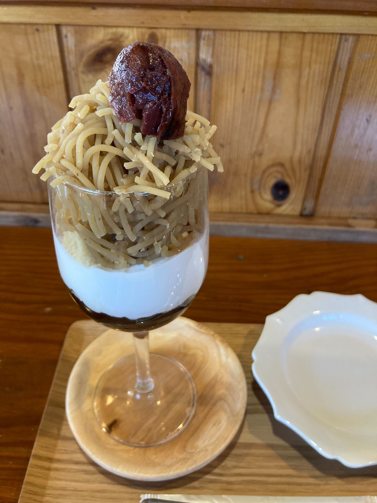

PUNTOのスイーツまとめ
パフェやかき氷など、季節のフルーツを使ったスイーツを楽しめるお店です。他にも、珈琲や紅茶も提供しています。木・金・土曜日のみランチがあるようですそんなPUNTOのスイーツ、パフェを紹介していきます。
レイニアチェリーパフェ

アメリカンチェリーを初めて食べたので、とても甘く、新鮮な味でした。中に、ブルーベリーソースが入っておりチェリーとの相性が抜群でした。他にも、クリーム・アイス・カスタード・チェリーソースなどが入っており、チェリーをさらにおいしくさせていました。
栗パフェ

モンブランが滑らかで、味が濃く栗が好きな人にとってはもってこいのパフェになっています。和風栗クリーム、渋皮煮ペースト、アイス、シフォン、カスタード、クリーム、黒糖ジュレが入っており、
アクセスマップ
営業時間火曜~金曜;11:00~20:00
土曜;11:30~17:00
定休日;日・月
[交通機関でお越しの方]
バス停(東名岩津/名鉄バス)徒歩1分